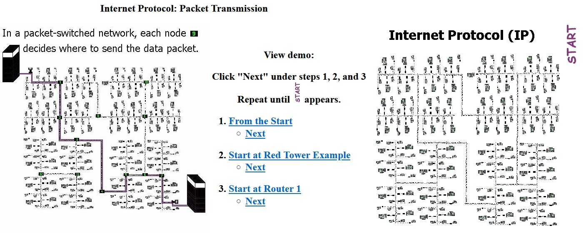

Work Related Writings
In my 2012 demo, the linked images had to be broken into sections because there were too many image files. So, one must complete each item (1,2, and 3) by clcking "Next" until first image in the group is seen
Click to begin!
